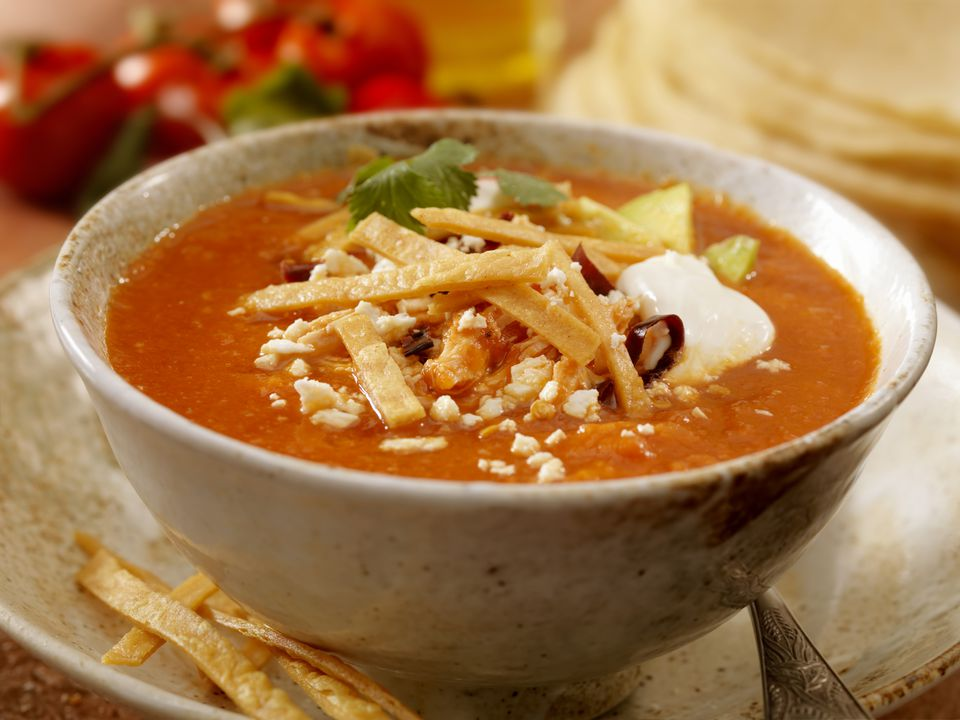

Tortilla Soup

Description
This recipe is for tortilla soup, one of my favorites. It doesn't require a ton of ingredients and is very easy to prepare.
The base of the soup is made out of tomatoes, but really the toppings are what make it stand out.
Ingredients
- Tortillas
- Avocado
- Tomatoes
- Garlic
- Onion
- Chicken breasts
- Chipotle peppers in adobo
- Queso fresco
- Some type of cheese that melts (gouda, mozzarella, chihuahua, cheddar, etc.)
- Vegetable oil, or any other oil adequate for frying
- Salt
- Cumin
- Black pepper
Steps
- Boil the tomatoes in a pot.
- Blend the boiled tomatoes with two cloves of garlic, a quarter of a white onion, salt to taste, black pepper,
a chipotle pepper, and a pinch of cumin.
- Add the blended tomato mixture to a pot, then add water as needed in order to get a soup-like consistency. Let it simmer.
- Cook the chicken breasts in a pot with boiling water and a good pinch of salt.
- Once the chicken is cooked through, shred it using two forks. You can also do it with your hands, but you should wait for it to cool down first.
- Add the shredded chicken to the soup.
- Cut up some tortillas into strips.
- Heat up a good amount of oil in a pot.
- Place the tortilla strips into the hot oil and wait for them to crisp up.
- Remove the tortilla strips from the pot once they are golden brown and place them on a wire rack or a paper towel.
- Add salt to the fried tortilla strips while they are still hot.
- Cut your queso fresco into small cubes.
- Grate the gouda cheese.
- Cut the avocado into slices.
- Slice a chipotle pepper into bite-sized pieces.
- Time to plate up: Place a good amount of soup in a plate, on top of that add the grated gouda, queso fresco in cubes, avocado slices,
sliced chipotle pepper and fried tortilla strips.
Home